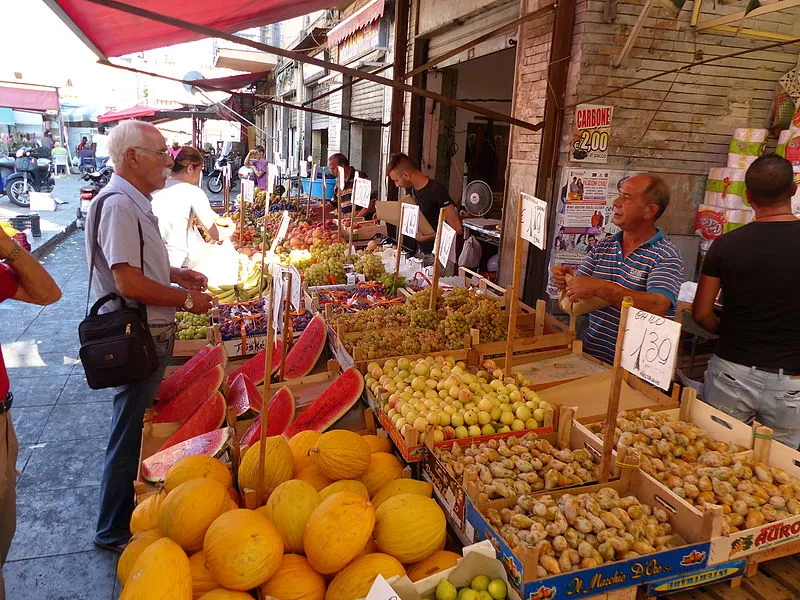
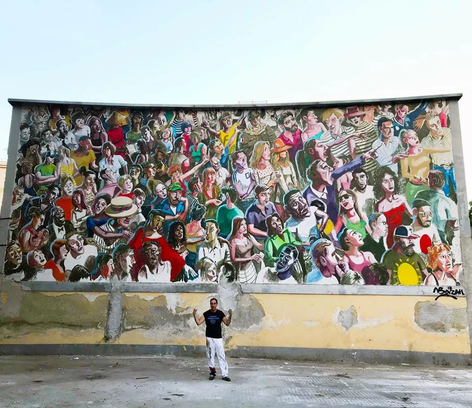
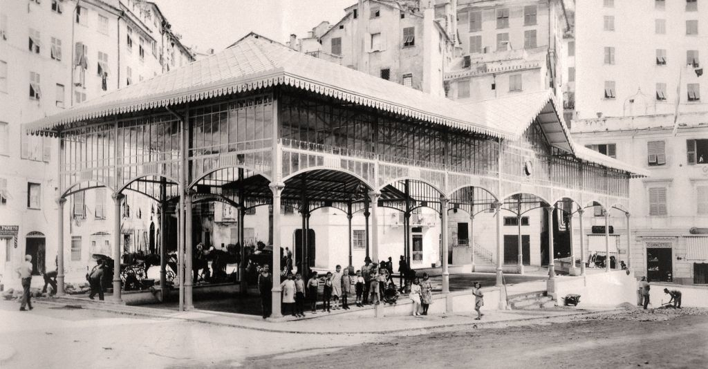

Approfondiamo il mercato più visitato di Palermo
Il posto
Il mercato, permanente, si estende da Piazza Casa Professa ai bastioni di corso Tukory verso Porta Sant'Agata. Il mercato è famoso per la vendita delle primizie che provengono dalle campagne del palermitano. Ballarò è il più antico tra i mercati della città, frequentato giornalmente da centinaia di persone, animato dalle cosiddette abbanniate, cioè dai chiassosi richiami dei venditori che, con il loro caratteristico e colorito accento locale, cercano di attirare l'interesse dei passanti. Si presenta come un ammasso di bancarelle assiepate e con la strada invasa dalle cassette di legno che contengono la merce che viene continuamente urlata, abbanniata, cantilenata per reclamizzare la buona qualità e il buon prezzo dei prodotti. Ballarò è un mercato principalmente alimentare, adibito soprattutto alla vendita di frutta, ortaggi, verdure, spezie, carne e pesce, ma si trovano anche articoli di uso domestico per la cucina e pulizia della casa, come nei mercati del Capo e della Vucciria.
Cibo e tradizione
All'interno del mercato i fruttivendoli vendono cibi cotti e cibi da strada, tipici della cucina palermitana, come cipolle bollite o al forno, panelle (frittelle di farina di ceci), crocchè o cazzilli (crocchette di patate), verdure lesse, polpo, quarume (interiora di vitello), panino con la meusa (milza). È bello andare al mercato perché ancora si vedono i dolciumi che le nostre nonne ci davano come merenda: la cubbàita, ossia il torrone di mandorle, i cannellini, le caramelle colorate bianche, rosa e blu con la cannella dentro, le caramelle Terranova alla carruba (prodotte nella storica fabbrica di caramelle Carruba che si trova proprio nel cuore del mercato), il gelato di campagna, cioè pezzo di zucchero e mandorle ai tre colori; si vedono le preparazioni culinarie nei banchetti di piccoli ristoranti, per esempio le melanzane alla tunisina, melanzane panate e fritte a cui aggiungere a crudo la cannella sopra.
Street Arts
Passeggiare per le strade del mercato di Ballarò permette anche di iniziare a familiarizzare con un lato artistico di Palermo molto interessante: la street art. L’inizio del mercato è segnato dalla scritta dell’artista TuttoeNiente: “Si vucìa, s’abbannìa, Ballarò è magia”, (ovvero “Si grida, si promuovono i prodotti urlando, Ballarò è magia”). Tra la varie installazioni ci sono quelle legate ai progetti di riqualificazione di due diversi angoli del quartiere. In piazza Mediterraneo c’è il Contapunti Antirazzista creato dal Collettivo FX. Nel segnapunti sono rappresentanti in alto i volti dei “Vincenti”, cioè dei personaggi che nel corso della storia si sono battuti in favore dei diritti umani e per una maggiore integrazione razziale. Da sinistra a destra ci sono: Gandhi, Nelson Mandela, Malcom X, San Suu Kyi, Emiliano Zapata e Capo Giuseppe. Nella parte bassa invece ci sono i “Perdenti”: Théoneste Bagosora, Vladimir Putin, John Chivington, Rodolfo Graziani, Adolf Eichmann e Slobodan Milošević. Dopo la riqualificazione di piazza Ecce Homo un intervento, promosso dal comitato SOS Ballarò e dall’associazione CaravanSerai Palermo, ha portato alla creazione di nuove installazioni come la Falena dell’illustratrice Sbrama e le opere degli artisti I Mangiatori di Patate e TuttoeNiente.
Monumenti
Di notevole interesse dal punto di vista architettonico all’interno del colorato corridoio di bancarelle del mercato: la chiesa del Carmine Maggiore, la cui cupola maiolicata con maggiore presenza di blu, sembra un tutt’uno con l’azzurro del cielo di Palermo; l\\\’oratorio del Carminello, piccolo gioiello serpottiano; la Torre di San Nicolò, torre civica quadrangolare con meravigliose bifore addossata alla Chiesa di San Nicolò, risalente al XIII secolo dalla cui terrazza si può ammirare un magnifico panorama a 360° sul centro storico di Palermo e, poco distante, il Complesso Monumentale di Santa Chiara con annessi oratorio e casa d’accoglienza, simbolo della multiculturalità e accoglienza del quartiere.

Storia
Ballarò è uno dei più antichi mercati storici di Palermo insieme a quelli della Vucciria, Il Capo, Lattarini e il Mercato delle Pulci. La sua nascita risale probabilmente al X secolo e si estendeva nella parte meridionale di Palermo e fuori le mura della città. Il nome Ballarò deriva forse dall’arabo suk-al-Bahlarà, nome del villaggio di Monreale da dove venivano i giardinieri islamici a vendere le loro merci. L’assetto attuale del mercato risale al 1468 mentre durante il governo borbonico furono costruiti i portici e i banconi. Ballarò ha mantenuto ancora oggi il suo carattere di mercato prevalentemente alimentare. La presenza di numerosi venditori, provenienti da Maghreb, Sri Lanka, Bangladesh e Africa Centrale, fa sì che nelle bancarelle siano presenti una grandissima varietà di prodotti, anche quelli più esotici. Oltre a frutta e verdura è possibile acquistare anche carne, pesce e cibi cotti.
